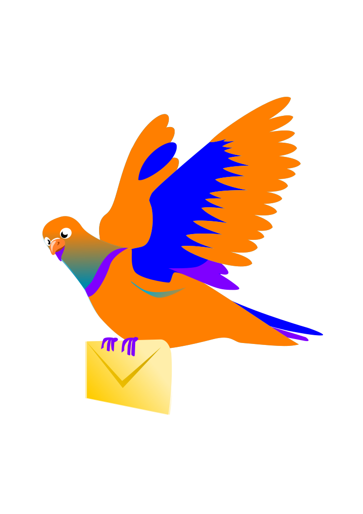

<!-- Marbo Cheng Ye-->
<!DOCTYPE html>
<html>

<head>
  <script src="jquery.js"></script>
  <script src="data_generator.js"></script>
  <link rel="stylesheet" type="text/css" href="style.css">
  <title>Twiddler</title>
</head>
<body>
  
  <header> </header>
  <script>
    var filter = undefined;

    $(document).ready(function(){
      var $body = $('body');
      $body.html('');


      var $header = $('header');
      var $logo= $("<header> </header>");
      $logo.appendTo($body);

      var $headerTitle = $("<h1 class='logo'>Twiddler</h1>");
      $headerTitle.appendTo($logo);

      var $trendContainer = $("<div class='trend'></div>");
      $trendContainer.appendTo($body);

      var $trendList = $("<ul><b>Trending</b><li>#InAWorldWithNoTwitter</li><li>Trump</li><li>#NoToGun</li><li>#LGBTQ</li><li>Asia</li></ul>");
      $trendList.appendTo($trendContainer);

      var $streams = $("<div class='stream-container'> </div>");
      $streams.appendTo($body);

    
      var tweets = streams.home;
      streamTweets(tweets, $streams);


      var $followContainer = $("<div class='follow'></div>");
      $followContainer.appendTo($body);

      var $followList = $("<ul><b>Who to follow</b><li>Lady Gaga</li><li>Trump</li><li>Obama</li><li>Ophrah</li><li>CNN</li></ul>");
      $followList.appendTo($followContainer);


      setInterval(function(){
        var tweets;
        if (filter === undefined){
          tweets = streams.home;
        }
        else {
          tweets = streams.users[filter];
        }
        streamTweets(tweets, $streams);

      }, 3500);

      });


      function streamTweets(tweets, $streams){

        $streams.html('');

        var index = tweets.length - 1;

        while(index >= 0){
          var tweet = tweets[index];
          var $tweet = $('<div class="tweet"</div>');


          //user
          let user = tweet.user;
          var $userTweet = $('<span id="user"></span>');
          $userTweet.text('@' + tweet.user);
          $userTweet.appendTo($tweet);


          //click on user changes twitt filter

          $userTweet.click(function(){
            filter = user;
            
          })
         

          //post Time
          var $timeAndDate = $('<span id="postedTime"></span>');
          $timeAndDate.text(formatTimeAndDate(tweet.created_at));
          $timeAndDate.appendTo($tweet);

          //userText
          var $message = $('<p id="message"></p>');
          $message.text(tweet.message);
          $message.appendTo($tweet);

          $tweet.appendTo($streams); //refresh
          index -= 1;
        }
      }

        function formatTimeAndDate(postTime){
          var date = (postTime.getMonth() + 1) + '/' + postTime.getDate() + '/' + postTime.getFullYear();
          var hours = postTime.getHours() < 10 ? "0" + postTime.getHours() : postTime.getHours();
          hours = ((hours + 11) % 12 + 1); 
          var suffix = (hours >= 12)? 'pm' : 'am';
          var minutes = postTime.getMinutes() < 10 ? "0" + postTime.getMinutes() : postTime.getMinutes();
          var seconds = postTime.getSeconds() < 10 ? "0" + postTime.getSeconds() : postTime.getSeconds();

          // 3/16/2019 6:10:20
          return " ᛫ "+date +" "+ hours + ":" + minutes + ":" + seconds +" " + suffix ;

        }

  

      

    </script>
  </body>
  </html>
